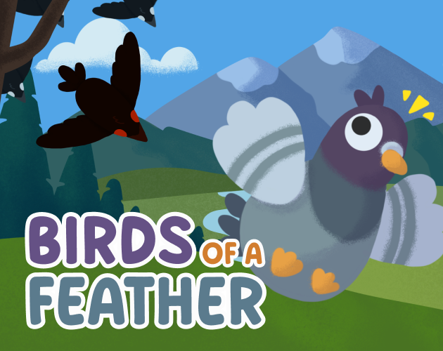

Birds of
a Feather
Un piccione leggendario. Uno sviluppatore. Tutto quanto. Vola sulla città, conquista gli uccelli sparsi e trasforma uno stormo in un esercito.

Il gioco
Un tempo il mondo era gentile con i piccioni: eroi di guerra, messaggeri di pace, compagni. Oggi sono considerati infestanti. Vola sulla città nei panni del piccione prescelto, conquista gli uccelli sparsi e fai crescere uno stormo abbastanza grande da affrontare i capi nemici che tengono a terra la specie. Metà esplorazione 3D, metà combattimento di massa, dove i tuoi seguaci sono allo stesso tempo la tua barra della vita, il tuo esercito e la tua responsabilità.
Perché conta
Tutto ciò che c'è nella build è mio: concept, sistemi, IA di stormo dei seguaci, capi nemici, layout dei livelli, UI, dialoghi e la build stessa, il tutto definito e consegnato entro le scadenze della jam. È la prova più chiara della mia ampiezza: posso progettare un gioco e poi farlo davvero esistere.
Note di design
- I seguaci come risorsa: reclutare uccelli è progressione, potenza di combattimento e rischio, tutto in un unico numero.
- Il volo come verbo: lo spostamento è il loop di ricompensa, quindi la città è progettata attorno a salti da posatoio a posatoio con navigazione per punti di riferimento.
- Imperfezione onesta: la pagina itch documenta apertamente i bug noti. In una build da jam, consegnare ed essere trasparenti batte il teatrino della rifinitura.
Giocabile · la meccanica principale
I tuoi seguaci sono il tuo esercito
Sei il piccione con l’anello bianco. Vola tra gli uccelli dispersi per conquistarli, e il tuo stormo ti seguirà ovunque. I corvi derubano uno stormo piccolo e perdono contro uno grande. Poi arriva il Boss Corvo, e solo uno stormo di quindici può cacciarlo.
Guida con il mouse, un dito o le frecce